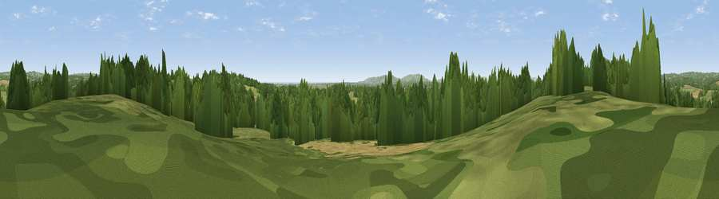

Viewpoint near Cowbeech
#34672 in England · top 47% of its area beats it · near Cowbeech · access?Where it is
The exact computed spot (TQ 60725 13875). Click the marker for map links.
Public access: no public right of way or access land is recorded at this exact spot — it may be on private land. Computed from Natural England's CRoW access layer and OpenStreetMap rights of way — not the legal definitive map. Always verify locally.
The view, rendered

A 360° render of this exact spot computed from the terrain model, tree cover and land cover — summer colours, afternoon light, calibrated against photographs of famous viewpoints. Real trees, hedges and buildings will differ in detail.
The panorama
Grey silhouette: terrain skyline in each direction (720 bearings, Earth curvature and refraction included). Dashed green: skyline with trees (+15 m) and buildings (+8 m) as obstacles. Blue strip: how far the ground is visible on each bearing.
Where the view opens
Wedge length = distance to the farthest visible ground on that bearing (vegetation-aware). Rings at 10, 25 and 50 km.
What fills the view
45% grassland · 42% woodland · 11% cropland · 2% built-up
Angular shares of the visible panorama (visual magnitude), not map area. Landscape diversity 0.46 (0–1 Shannon).
Key numbers
More beautiful places nearby
The staircase of upgrades: each row has a higher view potential than everything closer. Driving times are estimates from straight-line distance, calibrated against real road routing — check an actual route before setting out.
| Place | Direction | Drive | Score |
|---|---|---|---|
| Viewpoint near Rushlake Green | N · 5 km | ~11 min | 41.2 |
| Viewpoint near Rushlake Green | NNE · 6 km | ~12 min | 43.6 |
| Viewpoint near Rushlake Green | NNE · 6 km | ~13 min | 57.4 |
| Viewpoint near Dallington | ENE · 7 km | ~15 min | 58.4 |
| Viewpoint near Dallington | NE · 8 km | ~17 min | 67.2 |
| Viewpoint near Brightling | NE · 9 km | ~18 min | 68.0 |
| Brightling Obelisk [Brightling Down] | NE · 10 km | ~19 min | 69.1 |
| Viewpoint near Wilmington | SSW · 12 km | ~22 min | 81.8 |
50.90198, 0.28440 · source: screening · position refined by local search. Computed location — check access rights before visiting.